CS254 Visual Programming · Lecture 7
Other Events
Focus, component, list-selection, document, item, change and container events. Every slide of Lecture 7 – Other Events (14 slides) in order, with all code typed out, plus live testers to move focus, pick list items and toggle check boxes and see exactly which methods fire. The last section puts every listener from Lectures 4, 5 and 7 in one table.
Exam practice: 7 code-completion drills for this lecture · the course example programs
Slides 1–4
Focus and component events
Other Events 1
Slides adapted from slides of Marty Stepp based on materials by M. Ernst, S. Reges, D. Notkin, R. Mercer, Wikipedia — http://www.cs.washington.edu/331/
And Bob Myers Florida State University — https://www.cs.fsu.edu/~myers/cgs3416/
Focus events 2
public interface FocusListener {
public void focusGained(FocusEvent event);
public void focusLost(FocusEvent event);
}- focus: The current target of keyboard input.
- A focus event occurs when the keyboard cursor enters or exits a component, signifying the start/end of typing on that control.
- Many AWT/Swing components have this method:
public void addFocusListener(FocusListener kl)
- The abstract class
FocusAdapterimplements allFocusListenermethods with empty bodies.
Focus Event example 3
import java.awt.*;
import java.awt.event.*;
class TextFieldFocusEvent extends Frame implements FocusListener
{
TextField t1,t2;
public TextFieldFocusEvent()
{
createAndShowGUI();
}
private void createAndShowGUI()
{
setTitle("FocusListener for TextField");
setLayout(new FlowLayout());
// Create 2 textfields
t1=new TextField(20);
t2=new TextField(20);
// Add them
add(t1);
add(t2);
// Add FocusListeners
t1.addFocusListener(this);
t2.addFocusListener(this);
setSize(400,400);
setVisible(true);
}
public void focusGained(FocusEvent fe)
{
// Get what textfield got focus
TextField t=(TextField)fe.getSource();
t.setBackground(Color.LIGHT_GRAY);
}
public void focusLost(FocusEvent fe)
{
// Get what textfield lost focus
TextField t=(TextField)fe.getSource();
t.setBackground(Color.WHITE);
}
public static void main(String args[])
{
new TextFieldFocusEvent();
}
}Try it: focusGained / focusLost
AddedComponent events 4
public interface ComponentListener {
public void componentHidden(ComponentEvent event);
public void componentMoved(ComponentEvent event);
public void componentResized(ComponentEvent event);
public void componentShown(ComponentEvent event);
}- These events occur when a layout manager reshapes a component or when it is set to be visible or invisible.
- Many AWT/Swing components have this method:
public void addComponentListener(ComponentListener cl)
- The abstract class
ComponentAdapterimplements allComponentListenermethods with empty bodies.
Added · Example
frame.addComponentListener(new ComponentAdapter() {
public void componentResized(ComponentEvent e) {
frame.setTitle("Size: " + frame.getWidth() + " x " + frame.getHeight());
}
});Slides 5–8
JList selection events
JList select event 5
public interface ListSelectionListener {
public void valueChanged(ListSelectionEvent event);
}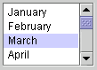
- These events occur when a user changes the element(s) selected within a
JList. - The
JListcomponent has this method:public void addListSelectionListener(ListSelectionListener lsl)
ListSelectionListener Interface 6
public void valueChanged(ListSelectionEvent evt)- This method is automatically called by the runtime system every time the selection is changed. It is not executed if the selection is unchanged, for example if the user clicks in an item that is already selected
- The body of this method has to contain the code that should be executed in response to the selection.
ListSelectionEvent
getFirstIndex()returns the position of the first (top-most) entry, the selection mode of which might have changed (from selected to non-selected or vice versa). 'Might' refers to the fact that the section state might be the same as before. For example if entries 5 to 8 were selected and the user now selects 5 to 10 then the first selected index remains unchanged. Which entries are selected can be found by using methodgetSelectedIndicesof class JList.getLastIndex()returns the position of the last (bottom-most) entry, the selection mode of which might have changed. See alsogetFirstIndex().getIsAdjusting– changing the selection in a list triggers a series of actions, each of which generates a list selection event. For example previously selected entries become unselected before new ones become selected. Usually, one would prefer this series of events to be completed before the application reacts to the change. For such a rapid series of events all but the last one return true as a result ofgetIsAdjusting. Only the last one returns false as a result ofgetIsAdjusting. This can be used to wait for the end of the series of adjustments before taking further action.- At the moment,
ListSelectionEventsupports only the selection modesSINGLE_SELECTIONandSINGLE_INTERVAL_SELECTION.
JList example 7–8
import SimpleFrame.SimpleFrame;
import java.awt.*;
import javax.swing.*;
import javax.swing.event.*;
public class ListTransferFrame extends SimpleFrame
{
private JList leftList, rightList;
private DefaultListModel rightListModel;
JButton transferButton;
String[] entries = {"Schleswig-Holstein", "Niedersachsen", "Hamburg",
"Bremen", "Mecklenburg-Vorpommern", "Brandenburg", "Berlin",
"Nordrhein-Westfalen","Hessen","Sachsen-Anhalt",
"Rheinland-Pfalz","Thüringen","Sachsen","Saarland",
"Bayern","Baden-Württemberg"};
public ListTransferFrame()
{
this.setSize(400,300);
leftList = new JList(entries);
rightListModel = new DefaultListModel();
rightList = new JList(rightListModel);
leftList.setSelectionMode(ListSelectionModel.SINGLE_SELECTION);
TransferListener selLis = new TransferListener();
leftList.addListSelectionListener(selLis);
JPanel listPanel = new JPanel();
listPanel.setLayout(new GridLayout(1,2));
JScrollPane leftScrollPane = new JScrollPane(leftList);
JScrollPane rightScrollPane = new JScrollPane(rightList);
listPanel.add(leftScrollPane);
listPanel.add(rightScrollPane);
this.getContentPane().add(listPanel,BorderLayout.CENTER);
}
public static void main(String[] args)
{
ListTransferFrame LLF = new ListTransferFrame();
LLF.showIt("List Transfer Frame");
}
//Listener as internal class
class TransferListener implements ListSelectionListener{
public TransferListener(){}
public void valueChanged(ListSelectionEvent evt){
if(!evt.getValueIsAdjusting())
{
String sel = (String)leftList.getSelectedValue();
if(rightListModel.contains(sel))
{
rightListModel.removeElement(sel);
}
else
{
rightListModel.addElement(sel);
}//ifelse
}//if
}//valueChanged
}//internal class
}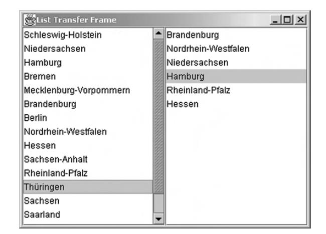
Try it: ListTransferFrame
AddedSlides 9–13
Document, item and change events
Document events 9
public interface DocumentListener {
public void changedUpdate(DocumentEvent event);
public void insertUpdate(DocumentEvent event);
public void removeUpdate(DocumentEvent event);
}- These events occur when the contents of a text component (e.g.
JTextFieldorJTextArea) change. - Such components have this method:
public Document getDocument()
- And a
Documentobject has this method:public void addDocumentListener(DocumentListener cl)
- And yes, there is a
DocumentAdapter.
Document events 10
| Method | Triggered When | Common for | Notes |
|---|---|---|---|
insertUpdate | Text is inserted into the document | Plain and styled documents | Called when characters are added. |
removeUpdate | Text is removed from the document | Plain and styled documents | Called when characters are deleted. |
changedUpdate | Attributes or styles change (but not text content) | Styled documents only (JTextPane, JEditorPane) | Never called for PlainDocument used in JTextField or JTextArea. |
Added · Example: a live character counter
JTextField field = new JTextField(20);
JLabel counter = new JLabel("0 characters");
field.getDocument().addDocumentListener(new DocumentListener() {
public void insertUpdate(DocumentEvent e) { update(); }
public void removeUpdate(DocumentEvent e) { update(); }
public void changedUpdate(DocumentEvent e) { } // never called for a JTextField
private void update() {
counter.setText(field.getText().length() + " characters");
}
});Try it: DocumentListener vs ActionListener
AddedItem events 11–12
public interface ItemListener {
public void itemStateChanged(ItemEvent event);
}- These events occur when an item has been selected or deselected by the user.
public void addItemListener(ItemListener il)
- Used with
JCheckBox,JComboBox.
| Type | Member | Meaning |
|---|---|---|
Object | getItem() | Returns the item affected by the event. |
int | getStateChange() | Returns the type of state change (selected or deselected). |
object | getSource() | Returns the object on which the event occurred |
static int | DESELECTED | This state-change-value indicates that a selected item was deselected. |
static int | SELECTED | This state-change value indicates that an item was selected. |
Try it: ItemEvents from a check box and a combo box
AddedChange events 13
public interface ChangeListener {
public void stateChanged(ChangeEvent event);
}- These events occur when some kind of state of a given component changes. Not used by all components, but essential for some.
JSpinner,JSlider,JTabbedPane,JColorChooser,JViewPort, and other components have this method:public void addChangeListener(ChangeListener cl)
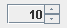
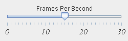
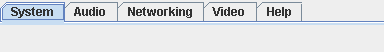
Added · Example (as in Lab 7: a slider updating a label)
JSlider slider = new JSlider(0, 50, 25);
JLabel label = new JLabel("midterm exam mark: 25");
slider.addChangeListener(new ChangeListener() {
public void stateChanged(ChangeEvent e) {
label.setText("midterm exam mark: " + slider.getValue());
}
});Slide 14
ContainerListener
ContainerListener 14
- Used to detect changes in a container when components are added or removed.
- Commonly used with containers such as JPanel and JFrame.
- Two event-handling methods:
componentAdded(ContainerEvent e): Called when a component is added.componentRemoved(ContainerEvent e): Called when a component is removed.
- Useful for dynamically updated interfaces, such as shopping carts and dashboards.
Added · The pattern in code
JPanel cart = new JPanel();
JLabel count = new JLabel("Items: 0");
cart.addContainerListener(new ContainerListener() {
public void componentAdded(ContainerEvent e) {
count.setText("Items: " + cart.getComponentCount());
}
public void componentRemoved(ContainerEvent e) {
count.setText("Items: " + cart.getComponentCount());
}
});
cart.add(new JLabel("Apple")); // fires componentAdded
cart.remove(0); // fires componentRemoved
cart.revalidate(); // re-run the layout after adding/removing
cart.repaint();The event fires on the add or remove call itself. After changing a visible container, call revalidate() and repaint() so the layout and the screen catch up. Imports: java.awt.event.ContainerListener and java.awt.event.ContainerEvent.
Added · from Lecture7_Examples.zip
Course example programs
Example · TextFieldFocusEvent.java
TextFieldFocusEvent: highlight the field with the focus
Slide 3, in Swing (the slide uses AWT's Frame and TextField). The frame implements FocusListener and listens to both fields: the field with the keyboard focus turns light grey, and the one that loses it goes back to white.
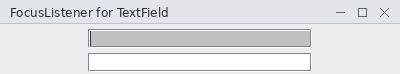
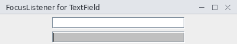
Key lines
public class TextFieldFocusEvent extends JFrame implements FocusListener {- FocusListener has two methods,
focusGainedandfocusLost; the frame writes both. t1.addFocusListener(this); t2.addFocusListener(this);
- One listener, the frame, for both fields.
JTextField t = (JTextField) fe.getSource(); t.setBackground(Color.LIGHT_GRAY);
getSource()says which field gained the focus.setDefaultCloseOperation(EXIT_ON_CLOSE);
- Inside a JFrame subclass the constant can be written without
JFrame.: it's inherited.
Full code: exactly as in the zip
package com.mycompany.otherevents;
import java.awt.*;
import java.awt.event.*;
import javax.swing.*;
public class TextFieldFocusEvent extends JFrame implements FocusListener {
JTextField t1, t2;
public TextFieldFocusEvent() {
createAndShowGUI();
}
private void createAndShowGUI() {
setTitle("FocusListener for TextField");
setLayout(new FlowLayout());
// Create 2 textfields
t1 = new JTextField(20);
t2 = new JTextField(20);
// Add them
add(t1);
add(t2);
// Add FocusListeners
t1.addFocusListener(this);
t2.addFocusListener(this);
setSize(400, 400);
setVisible(true);
setDefaultCloseOperation(EXIT_ON_CLOSE);
}
public void focusGained(FocusEvent fe) {
// Get what textfield got focus
JTextField t = (JTextField) fe.getSource();
t.setBackground(Color.LIGHT_GRAY);
}
public void focusLost(FocusEvent fe) {
// Get what textfield lost focus
JTextField t = (JTextField) fe.getSource();
t.setBackground(Color.WHITE);
}
public static void main(String args[]) {
new TextFieldFocusEvent();
}
}Example · ListenerDemo.java
ListenerDemo: ComponentListener in action
A ComponentListener hears when a component is resized, moved, shown or hidden (slide 4). The same CustomComponentListener object is added to a label (inside a scroll pane) and to the panel holding it. The check box hides and shows the label, and the status line names the component and what happened to it.
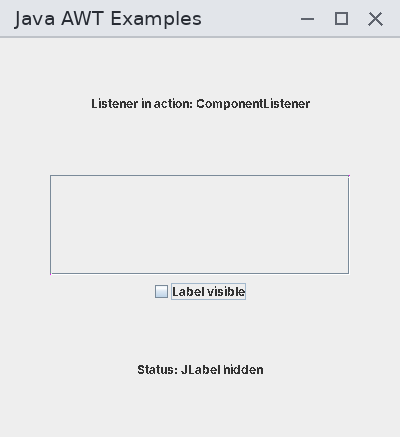
setVisible(false) fires componentHidden.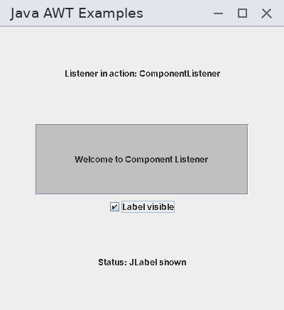
componentShown.Key lines
class CustomComponentListener implements ComponentListener {- All four methods:
componentResized,componentMoved,componentShown,componentHidden. msgLabel.addComponentListener(c); controlPanel.addComponentListener(c);
- One listener on two components;
e.getComponent()tells them apart. statusLabel.setText("Status: " + e.getComponent().getClass().getSimpleName() + " " + action);getClass().getSimpleName()gives the class name: JLabel or JPanel.checkbox.addItemListener(new ItemListener() { @Override public void itemStateChanged(ItemEvent e) { msgLabel.setVisible(checkbox.isSelected());- The check box controls the label's visibility; the component events follow from that.
SwingUtilities.invokeLater(() -> { ListenerDemo demo = new ListenerDemo(); demo.showComponentListenerDemo(); });- Builds the GUI on Swing's event thread, the recommended way (most course examples skip it).
() -> { … }is a lambda for a Runnable. if (result == JOptionPane.YES_OPTION) { source.dispose(); System.exit(0); }- With
DO_NOTHING_ON_CLOSE, the window only closes if you answer Yes.
Full code: exactly as in the zip
package com.mycompany.otherevents;
import java.awt.*;
import java.awt.event.*;
import javax.swing.*;
public class ListenerDemo {
private JFrame mainFrame;
private JLabel headerLabel;
private JLabel statusLabel;
private JPanel controlPanel;
public ListenerDemo() {
prepareGUI();
}
public static void main(String[] args) {
SwingUtilities.invokeLater(() -> {
ListenerDemo demo = new ListenerDemo();
demo.showComponentListenerDemo();
});
}
private void prepareGUI() {
mainFrame = new JFrame("Java AWT Examples");
mainFrame.setSize(400, 400);
mainFrame.setDefaultCloseOperation(JFrame.DO_NOTHING_ON_CLOSE);
mainFrame.setLayout(new GridLayout(3, 1));
mainFrame.addWindowListener(new WindowAdapter() {
public void windowClosing(WindowEvent windowEvent) {
JFrame source = (JFrame) windowEvent.getSource();
int result = JOptionPane.showConfirmDialog(
source,
"Are you sure you want to exit?",
"Confirm Exit",
JOptionPane.YES_NO_OPTION,
JOptionPane.QUESTION_MESSAGE
);
if (result == JOptionPane.YES_OPTION) {
source.dispose();
System.exit(0);
}
}
});
headerLabel = new JLabel("", SwingConstants.CENTER);
statusLabel = new JLabel("Status: Ready", SwingConstants.CENTER);
statusLabel.setPreferredSize(new Dimension(350, 50));
controlPanel = new JPanel();
controlPanel.setLayout(new FlowLayout());
mainFrame.add(headerLabel);
mainFrame.add(controlPanel);
mainFrame.add(statusLabel);
mainFrame.setVisible(true);
}
private void showComponentListenerDemo() {
headerLabel.setText("Listener in action: ComponentListener");
// Create message label
JLabel msgLabel = new JLabel("Welcome to Component Listener", SwingConstants.CENTER);
msgLabel.setOpaque(true);
msgLabel.setBackground(Color.LIGHT_GRAY);
msgLabel.setPreferredSize(new Dimension(250, 50));
// Put label in scroll pane
JScrollPane scrollPane = new JScrollPane(msgLabel);
scrollPane.setPreferredSize(new Dimension(300, 100));
scrollPane.setBackground(Color.MAGENTA);
// Checkbox with anonymous inner class
JCheckBox checkbox = new JCheckBox("Label visible", true);
checkbox.addItemListener(new ItemListener() {
@Override
public void itemStateChanged(ItemEvent e) {
msgLabel.setVisible(checkbox.isSelected());
}
});
// Component listener
CustomComponentListener c = new CustomComponentListener();
msgLabel.addComponentListener(c);
controlPanel.addComponentListener(c);
// Add components to panel
controlPanel.add(scrollPane);
controlPanel.add(checkbox);
mainFrame.setVisible(true);
}
// Inner class to listen to component events
class CustomComponentListener implements ComponentListener {
@Override
public void componentResized(ComponentEvent e) {
updateStatus(e, "resized");
}
@Override
public void componentMoved(ComponentEvent e) {
updateStatus(e, "moved");
}
@Override
public void componentShown(ComponentEvent e) {
updateStatus(e, "shown");
}
@Override
public void componentHidden(ComponentEvent e) {
updateStatus(e, "hidden");
}
private void updateStatus(ComponentEvent e, String action) {
statusLabel.setText("Status: " + e.getComponent().getClass().getSimpleName() + " " + action);
}
}
}Example · DrawingApplication.java
DrawingApplication: a size label, and why getGraphics() drawings vanish
A ComponentListener on the drawing panel keeps a label up to date with the panel's size. The drawing itself is done straight onto the screen with getGraphics() in mouseDragged, and the second screenshot shows the weakness of that.
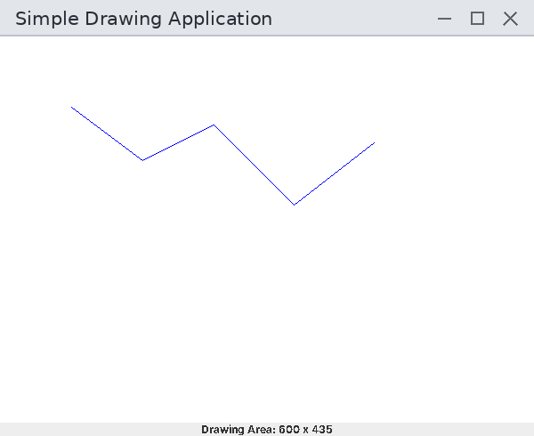
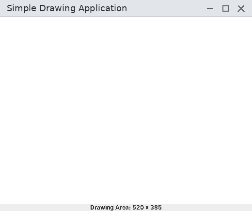
componentResized updated the label, and the line is gone. Nothing stored it, so the repaint wiped it.Key lines
drawingPanel.addComponentListener(new ComponentListener() { public void componentResized(ComponentEvent e) { updateSize(); }componentResizedruns whenever the panel's size changes, including when the window first appears.public void componentMoved(ComponentEvent e) { // Not needed in this example }- It's the interface, so the unused methods stay, empty.
ComponentAdapteravoids that (next example). Graphics g = getGraphics(); g.setColor(Color.BLUE); g.drawLine(x, y, e.getX(), e.getY());
getGraphics()draws on the screen at once, but the line isn't stored anywhere: the nextpaintComponent(after a resize, or minimise and restore) paints the white background over it.g.dispose();
- A Graphics you asked for yourself should be disposed; the one Swing passes to
paintComponentshould not. class DrawingPanel extends JPanel {- A second, non-public class in the same file.
Full code: exactly as in the zip
package com.mycompany.otherevents;
import javax.swing.*;
import java.awt.*;
import java.awt.event.*;
import java.awt.image.BufferedImage;
public class DrawingApplication extends JFrame {
private DrawingPanel drawingPanel;
private JLabel sizeLabel;
public DrawingApplication() {
setTitle("Simple Drawing Application");
setSize(600, 450);
setDefaultCloseOperation(JFrame.EXIT_ON_CLOSE);
setLayout(new BorderLayout());
drawingPanel = new DrawingPanel();
sizeLabel = new JLabel("", JLabel.CENTER);
add(drawingPanel, BorderLayout.CENTER);
add(sizeLabel, BorderLayout.SOUTH);
// Detect changes to the drawing panel
drawingPanel.addComponentListener(new ComponentListener() {
public void componentResized(ComponentEvent e) {
updateSize();
}
public void componentMoved(ComponentEvent e) {
// Not needed in this example
}
public void componentShown(ComponentEvent e) {
updateSize();
}
public void componentHidden(ComponentEvent e) {
// Not needed in this example
}
});
setVisible(true);
}
private void updateSize() {
sizeLabel.setText(
"Drawing Area: " + drawingPanel.getWidth()
+ " x " + drawingPanel.getHeight()
);
}
public static void main(String[] args) {
new DrawingApplication();
}
}
class DrawingPanel extends JPanel {
private int x = -1;
private int y = -1;
public DrawingPanel() {
setBackground(Color.WHITE);
addMouseListener(new MouseAdapter() {
public void mousePressed(MouseEvent e) {
x = e.getX();
y = e.getY();
}
});
addMouseMotionListener(new MouseMotionAdapter() {
public void mouseDragged(MouseEvent e) {
Graphics g = getGraphics();
g.setColor(Color.BLUE);
g.drawLine(x, y, e.getX(), e.getY());
x = e.getX();
y = e.getY();
g.dispose();
}
});
}
}Example · ResizableDrawingApplication.java
ResizableDrawingApplication: a drawing that survives resizing
The fix for the previous example. Lines go into a BufferedImage, paintComponent copies that image to the screen, and a ComponentAdapter makes a new image of the new size (copying the old drawing into it) when the panel is resized.
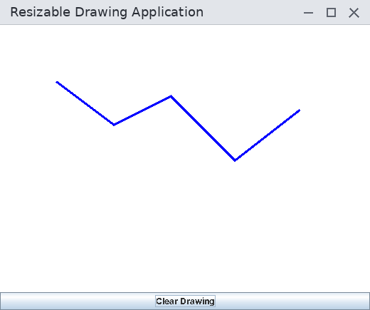
Key lines
addComponentListener(new ComponentAdapter() { public void componentResized(ComponentEvent e) { resizeDrawingImage(); } });ComponentAdapter: write only the method you need.g2.drawImage(drawingImage, 0, 0, null);
- In
resizeDrawingImage: copies the old drawing into the new image. if (getWidth() <= 0 || getHeight() <= 0) { return; }- A BufferedImage can't be 0 × 0, so wait until the panel has a real size.
g2.setStroke(new BasicStroke(3));
- A 3-pixel-wide line.
drawingPanel.clearDrawing();
- The Clear Drawing button paints the image white and repaints.
Full code: exactly as in the zip
/*
* Click nbfs://nbhost/SystemFileSystem/Templates/Licenses/license-default.txt to change this license
* Click nbfs://nbhost/SystemFileSystem/Templates/Classes/Class.java to edit this template
*/
package com.mycompany.otherevents;
import javax.swing.*;
import java.awt.*;
import java.awt.event.*;
import java.awt.image.BufferedImage;
public class ResizableDrawingApplication extends JFrame {
private ResizableDrawingPanel drawingPanel;
public ResizableDrawingApplication() {
setTitle("Resizable Drawing Application");
setSize(600, 450);
setDefaultCloseOperation(JFrame.EXIT_ON_CLOSE);
setLayout(new BorderLayout());
drawingPanel = new ResizableDrawingPanel();
JButton clearButton = new JButton("Clear Drawing");
clearButton.addActionListener(new ActionListener() {
public void actionPerformed(ActionEvent e) {
drawingPanel.clearDrawing();
}
});
add(drawingPanel, BorderLayout.CENTER);
add(clearButton, BorderLayout.SOUTH);
setLocationRelativeTo(null);
setVisible(true);
}
public static void main(String[] args) {
new ResizableDrawingApplication();
}
}
class ResizableDrawingPanel extends JPanel {
private BufferedImage drawingImage;
private int x = -1;
private int y = -1;
public ResizableDrawingPanel() {
setBackground(Color.WHITE);
addMouseListener(new MouseAdapter() {
public void mousePressed(MouseEvent e) {
x = e.getX();
y = e.getY();
}
public void mouseReleased(MouseEvent e) {
x = -1;
y = -1;
}
});
addMouseMotionListener(new MouseMotionAdapter() {
public void mouseDragged(MouseEvent e) {
if (drawingImage == null) {
return;
}
Graphics2D g2 = drawingImage.createGraphics();
g2.setColor(Color.BLUE);
g2.setStroke(new BasicStroke(3));
g2.drawLine(x, y, e.getX(), e.getY());
g2.dispose();
x = e.getX();
y = e.getY();
repaint();
}
});
addComponentListener(new ComponentAdapter() {
public void componentResized(ComponentEvent e) {
resizeDrawingImage();
}
});
}
protected void paintComponent(Graphics g) {
super.paintComponent(g);
if (drawingImage == null) {
createDrawingImage();
}
if (drawingImage != null) {
g.drawImage(drawingImage, 0, 0, null);
}
}
private void createDrawingImage() {
if (getWidth() <= 0 || getHeight() <= 0) {
return;
}
drawingImage = new BufferedImage(
getWidth(), getHeight(),
BufferedImage.TYPE_INT_RGB
);
Graphics2D g2 = drawingImage.createGraphics();
g2.setColor(Color.WHITE);
g2.fillRect(0, 0, getWidth(), getHeight());
g2.dispose();
}
private void resizeDrawingImage() {
if (drawingImage == null) {
return;
}
int newWidth = getWidth();
int newHeight = getHeight();
if (newWidth <= 0 || newHeight <= 0) {
return;
}
BufferedImage newImage = new BufferedImage(
newWidth, newHeight,
BufferedImage.TYPE_INT_RGB
);
Graphics2D g2 = newImage.createGraphics();
g2.setColor(Color.WHITE);
g2.fillRect(0, 0, newWidth, newHeight);
g2.drawImage(drawingImage, 0, 0, null);
g2.dispose();
drawingImage = newImage;
repaint();
}
public void clearDrawing() {
if (drawingImage != null) {
Graphics2D g2 = drawingImage.createGraphics();
g2.setColor(Color.WHITE);
g2.fillRect(0, 0,
drawingImage.getWidth(),
drawingImage.getHeight());
g2.dispose();
repaint();
}
}
}Example · ListTest.java
ListTest: pick a colour from a JList
Choose a colour in the list and the window's background changes to it (slides 5–6). The ListSelectionListener is an anonymous inner class.
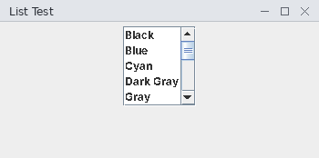
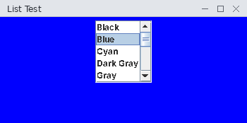
Key lines
colorList = new JList(colorNames); colorList.setVisibleRowCount(5);
- A list built from a String array, showing 5 rows at a time.
colorList.setSelectionMode(ListSelectionModel.SINGLE_SELECTION);
- One item at a time (the default allows several).
container.add(new JScrollPane(colorList));
- A JList doesn't scroll by itself: wrap it in a JScrollPane.
public void valueChanged(ListSelectionEvent event) { container.setBackground( colors[colorList.getSelectedIndex()]);valueChangedis the listener's only method. The selected index picks the matching Color from the parallel array.
Full code: exactly as in the zip
package com.mycompany.otherevents;
import java.awt.*;
import javax.swing.*;
import javax.swing.event.*;
public class ListTest extends JFrame {
private JList colorList;
private Container container;
private final String colorNames[] = {"Black", "Blue", "Cyan",
"Dark Gray", "Gray", "Green", "Light Gray", "Magenta",
"Orange", "Pink", "Red", "White", "Yellow"};
private final Color colors[] = {Color.BLACK, Color.BLUE, Color.CYAN,
Color.DARK_GRAY, Color.GRAY, Color.GREEN, Color.LIGHT_GRAY,
Color.MAGENTA, Color.ORANGE, Color.PINK, Color.RED, Color.WHITE,
Color.YELLOW};
// set up GUI
public ListTest() {
super("List Test");
// get content pane and set its layout
container = getContentPane();
container.setLayout(new FlowLayout());
// create a list with items in colorNames array
colorList = new JList(colorNames);
colorList.setVisibleRowCount(5);
// do not allow multiple selections
colorList.setSelectionMode(ListSelectionModel.SINGLE_SELECTION);
// add a JScrollPane containing JList to content pane
container.add(new JScrollPane(colorList));
colorList.addListSelectionListener(
new ListSelectionListener() { // anonymous inner class
// handle list selection events
public void valueChanged(ListSelectionEvent event) {
container.setBackground(
colors[colorList.getSelectedIndex()]);
}
} // end anonymous inner class
); // end call to addListSelectionListener
setSize(350, 150);
setVisible(true);
} // end ListTest constructor
public static void main(String args[]) {
ListTest application = new ListTest();
application.setDefaultCloseOperation(JFrame.EXIT_ON_CLOSE);
}
} // end class ListTestExample · ListTransferFrame.java
ListTransferFrame: move names between two lists
Slides 7–8. Clicking a name in the left list adds it to the right list; clicking a name that's already on the right removes it. The right list shows a DefaultListModel, so changing the model changes the list.
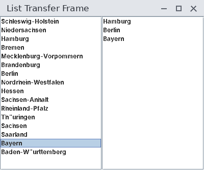
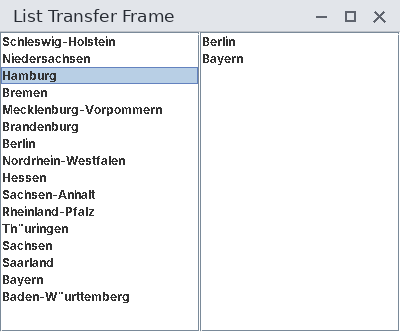
Key lines
rightListModel = new DefaultListModel(); rightList = new JList(rightListModel);
- The right list is built on a model you keep a reference to.
class TransferListener implements ListSelectionListener {- An inner class, so it can use
leftListandrightListModel. if (!evt.getValueIsAdjusting()) {- While the selection is still changing (mouse held down), events come with
getValueIsAdjusting()true; this waits for the final one. String sel = (String) leftList.getSelectedValue();
- The selected item, as an Object from a raw JList, hence the cast.
if (rightListModel.contains(sel)) { rightListModel.removeElement(sel); } else { rightListModel.addElement(sel); }contains,removeElement,addElement: DefaultListModel methods from Lecture 3 (slides 55–57).
Full code: exactly as in the zip
package com.mycompany.otherevents;
import java.awt.*;
import javax.swing.*;
import javax.swing.event.*;
public class ListTransferFrame extends JFrame{
private JList leftList, rightList;
private DefaultListModel rightListModel;
JButton transferButton;
String[] entries = {"Schleswig-Holstein", "Niedersachsen", "Hamburg",
"Bremen", "Mecklenburg-Vorpommern", "Brandenburg", "Berlin",
"Nordrhein-Westfalen", "Hessen", "Sachsen-Anhalt",
"Rheinland-Pfalz", "Th¨uringen", "Sachsen", "Saarland",
"Bayern", "Baden-W¨urttemberg"};
public ListTransferFrame() {
this.setSize(400, 300);
leftList = new JList(entries);
rightListModel = new DefaultListModel();
rightList = new JList(rightListModel);
leftList.setSelectionMode(ListSelectionModel.SINGLE_SELECTION);
TransferListener selLis = new TransferListener();
leftList.addListSelectionListener(selLis);
JPanel listPanel = new JPanel();
listPanel.setLayout(new GridLayout(1, 2));
JScrollPane leftScrollPane = new JScrollPane(leftList);
JScrollPane rightScrollPane = new JScrollPane(rightList);
listPanel.add(leftScrollPane);
listPanel.add(rightScrollPane);
this.getContentPane().add(listPanel, BorderLayout.CENTER);
}
public static void main(String[] args) {
ListTransferFrame LLF = new ListTransferFrame();
LLF.setTitle("List Transfer Frame");
LLF.setVisible(true);
LLF.setDefaultCloseOperation(EXIT_ON_CLOSE);
}
//Listener as internal class
class TransferListener implements ListSelectionListener {
public TransferListener() {
}
public void valueChanged(ListSelectionEvent evt) {
if (!evt.getValueIsAdjusting()) {
String sel = (String) leftList.getSelectedValue();
if (rightListModel.contains(sel)) {
rightListModel.removeElement(sel);
} else {
rightListModel.addElement(sel);
}//ifelse
}//if
}//valueChanged
}//internal class
}Example · DocumentEventDemo.java
DocumentEventDemo: logging every change to a text field
Slides 9–10. A DocumentListener on the text field's Document writes a line to a text area for every insertion and removal. The listener goes on textField.getDocument(), not on the field.
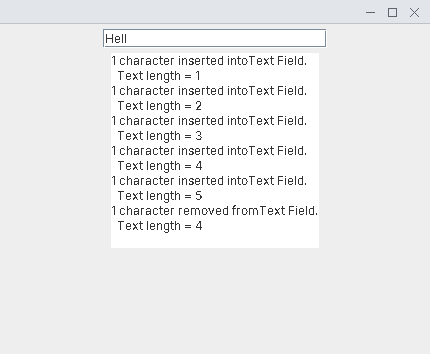
Key lines
textField.getDocument().addDocumentListener(new MyDocumentListener());
- Text components keep their text in a Document, and the Document fires the events.
textField.getDocument().putProperty("name", "Text Field");- Stores a name on the document;
updateLogreads it back withgetProperty("name"). public void changedUpdate(DocumentEvent e) { //Plain text components do not fire these events }changedUpdateis for style changes in styled text; JTextField and JTextArea never call it (slide 10).int changeLength = e.getLength();
- How many characters were inserted or removed. Pasting inserts several at once.
+ ((changeLength == 1) ? " " : "s ")
- “character” or “characters”.
Full code: exactly as in the zip
/*
* Click nbfs://nbhost/SystemFileSystem/Templates/Licenses/license-default.txt to change this license
* Click nbfs://nbhost/SystemFileSystem/Templates/Classes/Class.java to edit this template
*/
package com.mycompany.otherevents;
import javax.swing.text.Document;
import javax.swing.*;
import javax.swing.event.*;
public class DocumentEventDemo extends JFrame {
JTextField textField;
JTextArea displayArea;
public DocumentEventDemo() {
textField = new JTextField(20);
displayArea = new JTextArea();
textField.getDocument().addDocumentListener(new MyDocumentListener());
textField.getDocument().putProperty("name", "Text Field");
JPanel panel = new JPanel();
panel.add(textField);
panel.add(displayArea);
this.add(panel);
}
public static void main(String args[]) {
DocumentEventDemo application = new DocumentEventDemo();
application.setDefaultCloseOperation(JFrame.EXIT_ON_CLOSE);
application.setVisible(true);
}
class MyDocumentListener implements DocumentListener {
String newline = "\n";
public void insertUpdate(DocumentEvent e) {
updateLog(e, "inserted into");
}
public void removeUpdate(DocumentEvent e) {
updateLog(e, "removed from");
}
public void changedUpdate(DocumentEvent e) {
//Plain text components do not fire these events
}
public void updateLog(DocumentEvent e, String action) {
Document doc = (Document) e.getDocument();
int changeLength = e.getLength();
displayArea.append(
changeLength + " character"
+ ((changeLength == 1) ? " " : "s ")
+ action + doc.getProperty("name") + "." + newline
+ " Text length = " + doc.getLength() + newline);
}
}
}Example · SearchListenerExample.java
SearchListenerExample: search as you type
Every insertion or removal in the field re-counts the products that contain any of the typed words.
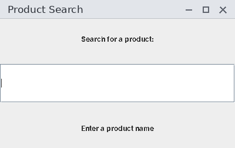
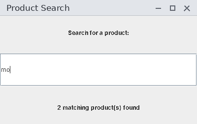
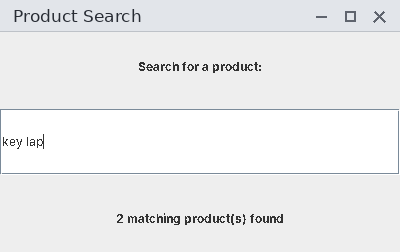
Key lines
searchField.getDocument().addDocumentListener( new DocumentListener() { public void insertUpdate(DocumentEvent e) { searchProducts(); }- All three methods call the same search, so the count updates while you type or delete.
String search = searchField.getText().toLowerCase().trim(); String[] words = search.split("\\s+");- Lower case for a case-insensitive match;
split("\\s+")breaks the text into words at runs of spaces. if (product.contains(words[j])) { count++; break; }- Count the product once, as soon as one word matches.
Full code: exactly as in the zip
/*
* Click nbfs://nbhost/SystemFileSystem/Templates/Licenses/license-default.txt to change this license
* Click nbfs://nbhost/SystemFileSystem/Templates/Classes/Class.java to edit this template
*/
package com.mycompany.otherevents;
import javax.swing.*;
import javax.swing.event.*;
import java.awt.*;
import java.awt.event.*;
public class SearchListenerExample extends JFrame {
private JTextField searchField;
private JLabel resultLabel;
private String[] products = {
"Laptop",
"Mouse",
"Keyboard",
"Monitor",
"Headphones"
};
public SearchListenerExample() {
setTitle("Product Search");
setSize(400, 220);
setDefaultCloseOperation(JFrame.EXIT_ON_CLOSE);
setLayout(new GridLayout(3, 1, 10, 10));
searchField = new JTextField();
resultLabel = new JLabel("Enter a product name", JLabel.CENTER);
add(new JLabel("Search for a product:", JLabel.CENTER));
add(searchField);
add(resultLabel);
// DocumentListener
searchField.getDocument().addDocumentListener(
new DocumentListener() {
public void insertUpdate(DocumentEvent e) {
searchProducts();
}
public void removeUpdate(DocumentEvent e) {
searchProducts();
}
public void changedUpdate(DocumentEvent e) {
searchProducts();
}
}
);
setLocationRelativeTo(null);
setVisible(true);
}
private void searchProducts() {
String search = searchField.getText().toLowerCase().trim();
String[] words = search.split("\\s+");
int count = 0;
for (int i = 0; i < products.length; i++) {
String product = products[i].toLowerCase();
for (int j = 0; j < words.length; j++) {
if (product.contains(words[j])) {
count++;
break;
}
}
}
resultLabel.setText(count + " matching product(s) found");
}
public static void main(String[] args) {
new SearchListenerExample();
}
}Example · CheckBoxTest.java
CheckBoxTest: bold and italic check boxes
Slides 11–12. Two check boxes share one ItemListener, a private inner class that rebuilds the text field's font from both boxes.
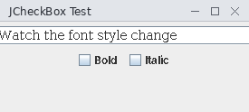
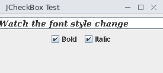
Key lines
bold.addItemListener(handler); italic.addItemListener(handler);
- Check boxes fire item events when ticked or unticked.
valBold = bold.isSelected() ? Font.BOLD : Font.PLAIN;
- Remember this box's part of the style.
field.setFont(new Font("Serif", valBold + valItalic, 14));- Styles add up:
BOLD + ITALICis bold italic, andPLAINis 0.
Full code: exactly as in the zip
package com.mycompany.otherevents;
import java.awt.*;
import java.awt.event.*;
import javax.swing.*;
public class CheckBoxTest extends JFrame {
private JTextField field;
private JCheckBox bold, italic;
// set up GUI
public CheckBoxTest() {
super("JCheckBox Test");
// get content pane and set its layout
Container container = getContentPane();
container.setLayout(new FlowLayout());
field = new JTextField("Watch the font style change", 20);
field.setFont(new Font("Serif", Font.PLAIN, 14));
container.add(field);
// create checkbox objects
bold = new JCheckBox("Bold");
container.add(bold);
italic = new JCheckBox("Italic");
container.add(italic);
// register listeners for JCheckBoxes
CheckBoxHandler handler = new CheckBoxHandler();
bold.addItemListener(handler);
italic.addItemListener(handler);
setSize(275, 100);
setVisible(true);
} // end CheckBoxText constructor
public static void main(String args[]) {
CheckBoxTest application = new CheckBoxTest();
application.setDefaultCloseOperation(JFrame.EXIT_ON_CLOSE);
}
// private inner class for ItemListener event handling
private class CheckBoxHandler implements ItemListener {
private int valBold = Font.PLAIN;
private int valItalic = Font.PLAIN;
// respond to checkbox events
public void itemStateChanged(ItemEvent event) {
// process bold checkbox events
if (event.getSource() == bold) {
valBold = bold.isSelected() ? Font.BOLD : Font.PLAIN;
}
// process italic checkbox events
if (event.getSource() == italic) {
valItalic = italic.isSelected() ? Font.ITALIC : Font.PLAIN;
}
// set text field font
field.setFont(new Font("Serif", valBold + valItalic, 14));
} // end method itemStateChanged
} // end private inner class CheckBoxHandler
} // end class CheckBoxTestExample · RadioButtonTest.java
RadioButtonTest: one font per radio button
Four radio buttons in a ButtonGroup. Each button gets its own handler object that holds the font to use, so the handler needs no if.
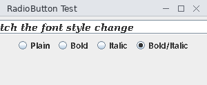
Key lines
plainButton = new JRadioButton("Plain", true);- The second argument selects it at the start.
radioGroup = new ButtonGroup(); radioGroup.add(plainButton);
- Only one button in the group can be selected.
boldItalicFont = new Font("Serif", Font.BOLD + Font.ITALIC, 14);- Bold italic.
plainButton.addItemListener(new RadioButtonHandler(plainFont));
- A new handler for each button, each built with its own font.
public void itemStateChanged(ItemEvent event) { field.setFont(font); }- Selecting a button first deselects the old one, which fires an event too (setting the old font), and then the new one's event sets the new font. Checking
getStateChange() == ItemEvent.SELECTEDwould skip the first.
Full code: exactly as in the zip
package com.mycompany.otherevents;
// Fig. 13.12: RadioButtonTest.java
// Creating radio buttons using ButtonGroup and JRadioButton.
import java.awt.*;
import java.awt.event.*;
import javax.swing.*;
public class RadioButtonTest extends JFrame {
private JTextField field;
private Font plainFont, boldFont, italicFont, boldItalicFont;
private JRadioButton plainButton, boldButton, italicButton,
boldItalicButton;
private ButtonGroup radioGroup;
// create GUI and fonts
public RadioButtonTest() {
super("RadioButton Test");
// get content pane and set its layout
Container container = getContentPane();
container.setLayout(new FlowLayout());
// set up JTextField
field = new JTextField("Watch the font style change", 25);
container.add(field);
// create radio buttons
plainButton = new JRadioButton("Plain", true);
container.add(plainButton);
boldButton = new JRadioButton("Bold", false);
container.add(boldButton);
italicButton = new JRadioButton("Italic", false);
container.add(italicButton);
boldItalicButton = new JRadioButton("Bold/Italic", false);
container.add(boldItalicButton);
// create logical relationship between JRadioButtons
radioGroup = new ButtonGroup();
radioGroup.add(plainButton);
radioGroup.add(boldButton);
radioGroup.add(italicButton);
radioGroup.add(boldItalicButton);
// create font objects
plainFont = new Font("Serif", Font.PLAIN, 14);
boldFont = new Font("Serif", Font.BOLD, 14);
italicFont = new Font("Serif", Font.ITALIC, 14);
boldItalicFont = new Font("Serif", Font.BOLD + Font.ITALIC, 14);
field.setFont(plainFont); // set initial font
// register events for JRadioButtons
plainButton.addItemListener(new RadioButtonHandler(plainFont));
boldButton.addItemListener(new RadioButtonHandler(boldFont));
italicButton.addItemListener(
new RadioButtonHandler(italicFont));
boldItalicButton.addItemListener(
new RadioButtonHandler(boldItalicFont));
setSize(300, 100);
setVisible(true);
} // end RadioButtonTest constructor
public static void main(String args[]) {
RadioButtonTest application = new RadioButtonTest();
application.setDefaultCloseOperation(JFrame.EXIT_ON_CLOSE);
}
// private inner class to handle radio button events
private class RadioButtonHandler implements ItemListener {
private Font font;
public RadioButtonHandler(Font f) {
font = f;
}
// handle radio button events
public void itemStateChanged(ItemEvent event) {
field.setFont(font);
}
} // end private inner class RadioButtonHandler
} // end class RadioButtonTest Example · ComboBoxTest.java
ComboBoxTest: an icon picker
Choosing a file name in the combo box shows that icon and name in the label. The zip's 1.png–4.png are Java logo pictures, so these screenshots use stand-in icons with the same names.
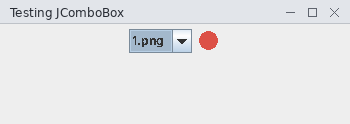
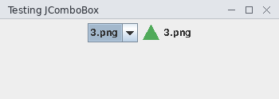
Key lines
imagesComboBox.setMaximumRowCount(3);
- The drop-down shows 3 items, then scrolls.
if (event.getStateChange() == ItemEvent.SELECTED) {- Changing the choice fires two item events: DESELECTED for the old item and SELECTED for the new one. Only the second matters here.
label.setIcon(icons[imagesComboBox.getSelectedIndex()]); label.setText(names[imagesComboBox.getSelectedIndex()]);
- The selected index links the combo box to the parallel arrays of icons and names.
String names[] = {"1.png", "2.png", "3.png", "4.png"};- A local variable used inside the anonymous class. That's allowed because it's never reassigned (effectively final).
Full code: exactly as in the zip
package com.mycompany.otherevents;
import java.awt.*;
import java.awt.event.*;
import javax.swing.*;
public class ComboBoxTest extends JFrame {
private JComboBox imagesComboBox;
private JLabel label;
private Icon icons[] = {new ImageIcon("1.png"),
new ImageIcon("2.png"), new ImageIcon("3.png"),
new ImageIcon("4.png")};
// set up GUI
public ComboBoxTest() {
super("Testing JComboBox");
String names[] = {"1.png", "2.png", "3.png", "4.png"};
// get content pane and set its layout
Container container = getContentPane();
container.setLayout(new FlowLayout());
// set up JComboBox and register its event handler
imagesComboBox = new JComboBox(names);
imagesComboBox.setMaximumRowCount(3);
imagesComboBox.addItemListener(
new ItemListener() { // anonymous inner class
// handle JComboBox event
public void itemStateChanged(ItemEvent event) {
// determine whether check box selected
if (event.getStateChange() == ItemEvent.SELECTED) {
label.setIcon(icons[imagesComboBox.getSelectedIndex()]);
label.setText(names[imagesComboBox.getSelectedIndex()]);
// label.setText(imagesComboBox.getSelectedItem().toString());
}
}
} // end anonymous inner class
); // end call to addItemListener
container.add(imagesComboBox);
// set up JLabel to display ImageIcons
label = new JLabel(icons[0]);
container.add(label);
setSize(350, 100);
setVisible(true);
} // end ComboBoxTest constructor
public static void main(String args[]) {
ComboBoxTest application = new ComboBoxTest();
application.setDefaultCloseOperation(JFrame.EXIT_ON_CLOSE);
}
} // end class ComboBoxTestExample · ShoppingCartExample.java
ShoppingCartExample: a ContainerListener keeps the count
Slide 14's shopping cart. Add Product asks for a product in an input dialog with a drop-down and adds a label for it to cartPanel; Remove Last Product removes the last label. The buttons never touch the counter: a ContainerListener on cartPanel updates it after every add or remove and prints a line to the console.
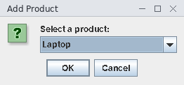
showInputDialog with an array of choices gives a drop-down.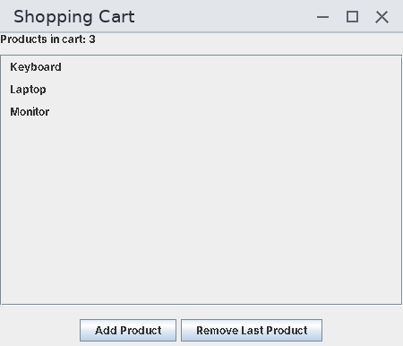
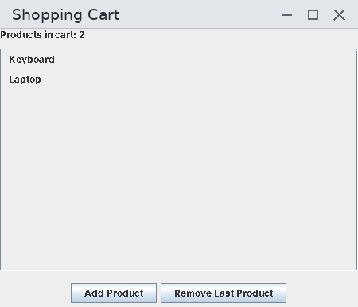
OutputProduct added to cart
Product added to cart
Product added to cart
Product removed from cart
Key lines
cartPanel.setLayout(new BoxLayout( cartPanel, BoxLayout.Y_AXIS ));- BoxLayout puts components in one column (
Y_AXIS) or one row (X_AXIS). Its constructor needs the panel it will lay out. cartPanel.addContainerListener(new ContainerListener() { public void componentAdded(ContainerEvent e) { updateCount();componentAddedandcomponentRemovedrun after every add or remove on this panel.String product = (String) JOptionPane.showInputDialog( ShoppingCartExample.this, "Select a product:", "Add Product", JOptionPane.QUESTION_MESSAGE, null, products, products[0] );- The seven-argument
showInputDialog: parent, message, title, message type, icon (null = the default), the choices, the starting choice. It returns the chosen item, or null for Cancel. cartPanel.add(productLabel); cartPanel.revalidate(); cartPanel.repaint();
- After adding or removing while the window is showing:
revalidate()re-runs the layout,repaint()redraws. int count = cartPanel.getComponentCount(); if (count > 0) { cartPanel.remove(count - 1);getComponentCount()andremove(index): the last component is atcount - 1.
Full code: exactly as in the zip
/*
* Click nbfs://nbhost/SystemFileSystem/Templates/Licenses/license-default.txt to change this license
* Click nbfs://nbhost/SystemFileSystem/Templates/Classes/Class.java to edit this template
*/
package com.mycompany.otherevents;
import javax.swing.*;
import java.awt.*;
import java.awt.event.*;
public class ShoppingCartExample extends JFrame {
private JPanel cartPanel;
private JLabel countLabel;
public ShoppingCartExample() {
setTitle("Shopping Cart");
setSize(450, 350);
setDefaultCloseOperation(JFrame.EXIT_ON_CLOSE);
setLayout(new BorderLayout(10, 10));
// Panel containing shopping cart products
cartPanel = new JPanel();
cartPanel.setLayout(new BoxLayout(
cartPanel, BoxLayout.Y_AXIS
));
// ContainerListener
cartPanel.addContainerListener(new ContainerListener() {
public void componentAdded(ContainerEvent e) {
updateCount();
System.out.println("Product added to cart");
}
public void componentRemoved(ContainerEvent e) {
updateCount();
System.out.println("Product removed from cart");
}
});
countLabel = new JLabel("Products in cart: 0");
JButton addButton = new JButton("Add Product");
JButton removeButton = new JButton("Remove Last Product");
addButton.addActionListener(new ActionListener() {
public void actionPerformed(ActionEvent e) {
String[] products = {
"Laptop",
"Mouse",
"Keyboard",
"Headphones",
"Monitor"
};
String product = (String) JOptionPane.showInputDialog(
ShoppingCartExample.this,
"Select a product:",
"Add Product",
JOptionPane.QUESTION_MESSAGE,
null,
products,
products[0]
);
if (product != null) {
JLabel productLabel = new JLabel(product);
productLabel.setBorder(
BorderFactory.createEmptyBorder(5, 10, 5, 10)
);
cartPanel.add(productLabel);
cartPanel.revalidate();
cartPanel.repaint();
}
}
});
removeButton.addActionListener(new ActionListener() {
public void actionPerformed(ActionEvent e) {
int count = cartPanel.getComponentCount();
if (count > 0) {
cartPanel.remove(count - 1);
cartPanel.revalidate();
cartPanel.repaint();
}
}
});
JPanel buttonPanel = new JPanel();
buttonPanel.add(addButton);
buttonPanel.add(removeButton);
add(countLabel, BorderLayout.NORTH);
add(new JScrollPane(cartPanel), BorderLayout.CENTER);
add(buttonPanel, BorderLayout.SOUTH);
setLocationRelativeTo(null);
setVisible(true);
}
private void updateCount() {
countLabel.setText(
"Products in cart: " + cartPanel.getComponentCount()
);
}
public static void main(String[] args) {
new ShoppingCartExample();
}
}Added · Lectures 4, 5 and 7 in one table
All listeners at a glance
| Listener | Method(s) you write | Register with | Typical source | Adapter | Where |
|---|---|---|---|---|---|
| ActionListener | actionPerformed | addActionListener | JButton, JTextField (Enter), JRadioButton, JCheckBox, JComboBox, JMenuItem | – | L4 slides 10–26 |
| WindowListener | windowOpened, windowClosing, windowClosed, windowIconified, windowDeiconified, windowActivated, windowDeactivated | addWindowListener | JFrame, JDialog, JWindow | WindowAdapter | L4 slides 28–36 |
| MouseListener | mouseClicked, mousePressed, mouseReleased, mouseEntered, mouseExited | addMouseListener | any component (JButton, JLabel, JPanel…) | MouseAdapter | L5 slides 2–5, 19–31 |
| MouseMotionListener | mouseMoved, mouseDragged | addMouseMotionListener | any component | MouseMotionAdapter (or MouseAdapter) | L5 slides 3, 6, 22–24 |
| MouseWheelListener | mouseWheelMoved | addMouseWheelListener | any component | MouseAdapter | L5 slide 7 |
| MouseInputListener | all of MouseListener + MouseMotionListener | addMouseListener + addMouseMotionListener | any component | MouseInputAdapter | L5 slides 23–24 |
| KeyListener | keyPressed, keyReleased, keyTyped | addKeyListener | JTextField, JTextArea (any focusable component) | KeyAdapter | L5 slides 9–18 |
| FocusListener | focusGained, focusLost | addFocusListener | text fields, any focusable component | FocusAdapter | L7 slides 2–3 |
| ComponentListener | componentResized, componentMoved, componentShown, componentHidden | addComponentListener | any component, JFrame | ComponentAdapter | L7 slide 4 |
| ListSelectionListener | valueChanged | addListSelectionListener | JList | – | L7 slides 5–8 |
| DocumentListener | insertUpdate, removeUpdate, changedUpdate | getDocument().addDocumentListener | JTextField, JTextArea | – | L7 slides 9–10 |
| ItemListener | itemStateChanged | addItemListener | JCheckBox, JRadioButton, JComboBox | – | L7 slides 11–12 |
| ChangeListener | stateChanged | addChangeListener | JSlider, JSpinner, JTabbedPane | – | L7 slide 13 |
| ContainerListener | componentAdded, componentRemoved | addContainerListener | JPanel, a frame's content pane | ContainerAdapter | L7 slide 14 |
All of Lecture 7
Flashcards
Tap the card to flip it. Each answer names the slide it comes from.